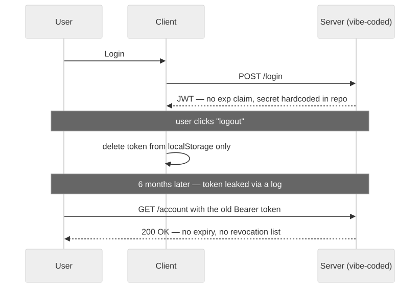

3 — The login page is a prop
Your app demos perfectly, because the demo only ever tests the path a human clicks. Attackers don't click. They curl.
Look at almost any named vibe-coding security incident and the same pattern shows up: session logic the AI never generated, or generated client-side only; secrets shipped in code; storage or database access simply left open. "It's just an MVP" is the load-bearing lie behind all of them.

The login form and the route guard are real UI. The API underneath never asks who's calling — and attackers never load the page at all.
This isn't a hunch about AI-generated code being a bit worse at security — it's measured, and the sharpest edge is a Stanford study that found developers using AI assistants wrote less secure code while being more confident it was secure. Veracode's 2025 report found 45% of AI-generated code samples failed security tests outright — Java the worst at 72%, XSS defences failing 86% of the time. BaxBench found roughly half of functionally-correct AI-generated backends contained an exploitable vulnerability alongside working functionality.
The specific sins repeat: hardcoded JWT secrets, tokens with no
expiry and no revocation path, a "logout" that only deletes a token
from localStorage on the client, password rules from
2005, OTP endpoints anyone can call. The Tea app exposed roughly
72,000 images from an unauthenticated Firebase Storage bucket in
July 2025 — including around 13,000 verification selfies and
government IDs — with researchers attributing the code to AI
generation that was never audited. Wiz Research found Base44's
registration and OTP-verification endpoints had no authentication at
all that same month: since the app ID was public, anyone could
self-register a verified account inside a private enterprise app,
bypassing SSO entirely. It was fixed within 24 hours of disclosure —
which tells you the fix wasn't hard, just never attempted. Escape.tech's
scan of 5,600 vibe-coded apps found over 2,000 high-impact
vulnerabilities and 400+ exposed secrets, live in production.

Logout deleted the token from the browser. The server never heard about it.
The fix is almost anticlimactic: don't roll your own auth. Managed auth — Auth0, Clerk, Supabase Auth, Cognito — exists to own password hashing, token lifecycle, revocation, MFA, and brute-force protection, for the same reason you don't write your own crypto library. If you're using JWTs regardless, follow the OWASP cheat sheet: short expiry, refresh-token rotation, and server-side revocation that actually gets checked.
If you've shipped fast with AI tools and want a second pair of eyes before it goes further, that's exactly what a vibe code audit is for.